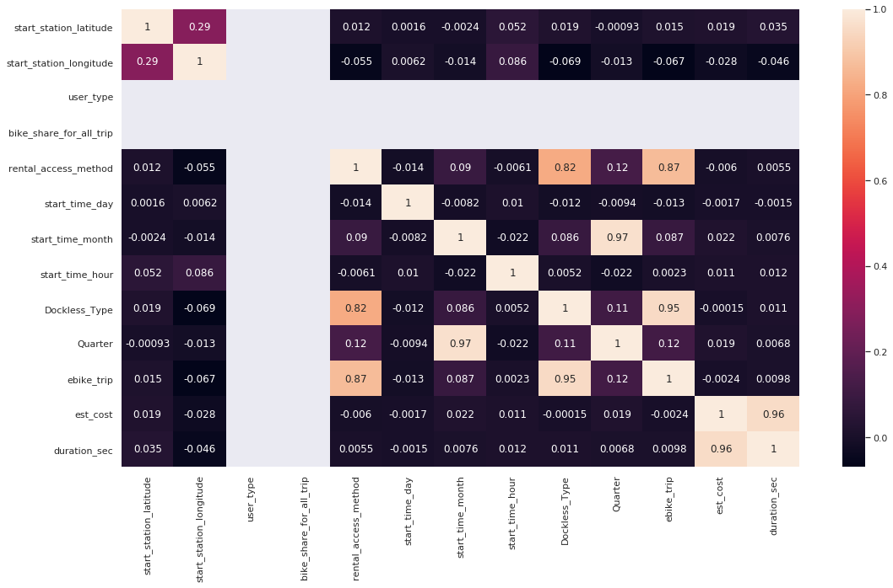

Machine Learning, Test 1¶
## ML Learning
import pandas as pd
import matplotlib.pyplot as plt
import numpy as np
import seaborn as sns
# from wrangling4 import *
# poly, lyftSF19_df, docked_df, docked_df100_intersect = lyft19Combined()
from sklearn.linear_model import LinearRegression
from sklearn.metrics import mean_squared_error, r2_score
df = pd.read_csv(r'inputs/data_lyftSF2019/outputs/lyftSF19.csv',float_precision=None)
---------------------------------------------------------------------------
FileNotFoundError Traceback (most recent call last)
/tmp/ipykernel_31701/2036727155.py in <module>
----> 1 df = pd.read_csv(r'inputs/data_lyftSF2019/outputs/lyftSF19.csv',float_precision=None)
~/anaconda3/lib/python3.7/site-packages/pandas/util/_decorators.py in wrapper(*args, **kwargs)
309 stacklevel=stacklevel,
310 )
--> 311 return func(*args, **kwargs)
312
313 return wrapper
~/anaconda3/lib/python3.7/site-packages/pandas/io/parsers/readers.py in read_csv(filepath_or_buffer, sep, delimiter, header, names, index_col, usecols, squeeze, prefix, mangle_dupe_cols, dtype, engine, converters, true_values, false_values, skipinitialspace, skiprows, skipfooter, nrows, na_values, keep_default_na, na_filter, verbose, skip_blank_lines, parse_dates, infer_datetime_format, keep_date_col, date_parser, dayfirst, cache_dates, iterator, chunksize, compression, thousands, decimal, lineterminator, quotechar, quoting, doublequote, escapechar, comment, encoding, encoding_errors, dialect, error_bad_lines, warn_bad_lines, on_bad_lines, delim_whitespace, low_memory, memory_map, float_precision, storage_options)
584 kwds.update(kwds_defaults)
585
--> 586 return _read(filepath_or_buffer, kwds)
587
588
~/anaconda3/lib/python3.7/site-packages/pandas/io/parsers/readers.py in _read(filepath_or_buffer, kwds)
480
481 # Create the parser.
--> 482 parser = TextFileReader(filepath_or_buffer, **kwds)
483
484 if chunksize or iterator:
~/anaconda3/lib/python3.7/site-packages/pandas/io/parsers/readers.py in __init__(self, f, engine, **kwds)
809 self.options["has_index_names"] = kwds["has_index_names"]
810
--> 811 self._engine = self._make_engine(self.engine)
812
813 def close(self):
~/anaconda3/lib/python3.7/site-packages/pandas/io/parsers/readers.py in _make_engine(self, engine)
1038 )
1039 # error: Too many arguments for "ParserBase"
-> 1040 return mapping[engine](self.f, **self.options) # type: ignore[call-arg]
1041
1042 def _failover_to_python(self):
~/anaconda3/lib/python3.7/site-packages/pandas/io/parsers/c_parser_wrapper.py in __init__(self, src, **kwds)
49
50 # open handles
---> 51 self._open_handles(src, kwds)
52 assert self.handles is not None
53
~/anaconda3/lib/python3.7/site-packages/pandas/io/parsers/base_parser.py in _open_handles(self, src, kwds)
227 memory_map=kwds.get("memory_map", False),
228 storage_options=kwds.get("storage_options", None),
--> 229 errors=kwds.get("encoding_errors", "strict"),
230 )
231
~/anaconda3/lib/python3.7/site-packages/pandas/io/common.py in get_handle(path_or_buf, mode, encoding, compression, memory_map, is_text, errors, storage_options)
704 encoding=ioargs.encoding,
705 errors=errors,
--> 706 newline="",
707 )
708 else:
FileNotFoundError: [Errno 2] No such file or directory: 'inputs/data_lyftSF2019/outputs/lyftSF19.csv'
del df['Unnamed: 0']
display(df.columns)
df.head()
Index(['duration_sec', 'start_time', 'end_time', 'start_station_id',
'start_station_name', 'start_station_latitude',
'start_station_longitude', 'end_station_id', 'end_station_name',
'end_station_latitude', 'end_station_longitude', 'bike_id', 'user_type',
'bike_share_for_all_trip', 'rental_access_method', 'start_neighborhood',
'date_start', 'hour_start', 'date_end', 'hour_end', 'end_neighborhood',
'start_time_day', 'start_time_month', 'start_time_hour', 'end_time_day',
'end_time_month', 'end_time_hour', 'G_distance', 'G_time', 'geometry',
'Dockless_Type', 'route', 'Quarter', 'ebike_trip', 'duration_min',
'est_cost'],
dtype='object')
| duration_sec | start_time | end_time | start_station_id | start_station_name | start_station_latitude | start_station_longitude | end_station_id | end_station_name | end_station_latitude | ... | end_time_hour | G_distance | G_time | geometry | Dockless_Type | route | Quarter | ebike_trip | duration_min | est_cost | |
|---|---|---|---|---|---|---|---|---|---|---|---|---|---|---|---|---|---|---|---|---|---|
| 0 | 1767 | 2019-01-01 00:08:39 | 2019-01-01 00:38:06 | 16.0 | Steuart St at Market St | 37.79413 | -122.39443 | 115.0 | Jackson Playground | 37.765026 | ... | 1 | 5268.0 | 1217.0 | NaN | NaN | From Steuart St at Market St to Jackson Playgr... | 2019Q1 | No | 29 | 2 |
| 1 | 1037 | 2019-01-18 08:32:34 | 2019-01-18 08:49:52 | 16.0 | Steuart St at Market St | 37.79413 | -122.39443 | 115.0 | Jackson Playground | 37.765026 | ... | 9 | 5268.0 | 1217.0 | NaN | NaN | From Steuart St at Market St to Jackson Playgr... | 2019Q1 | No | 17 | 2 |
| 2 | 860 | 2019-01-19 20:49:01 | 2019-01-19 21:03:22 | 16.0 | Steuart St at Market St | 37.79413 | -122.39443 | 115.0 | Jackson Playground | 37.765026 | ... | 21 | 5268.0 | 1217.0 | NaN | NaN | From Steuart St at Market St to Jackson Playgr... | 2019Q1 | No | 14 | 0 |
| 3 | 1070 | 2019-01-22 18:28:11 | 2019-01-22 18:46:01 | 16.0 | Steuart St at Market St | 37.79413 | -122.39443 | 115.0 | Jackson Playground | 37.765026 | ... | 19 | 5268.0 | 1217.0 | NaN | NaN | From Steuart St at Market St to Jackson Playgr... | 2019Q1 | No | 17 | 0 |
| 4 | 1243 | 2019-01-25 16:58:55 | 2019-01-25 17:19:39 | 16.0 | Steuart St at Market St | 37.79413 | -122.39443 | 115.0 | Jackson Playground | 37.765026 | ... | 17 | 5268.0 | 1217.0 | NaN | NaN | From Steuart St at Market St to Jackson Playgr... | 2019Q1 | No | 20 | 2 |
5 rows × 36 columns
### Estimate the duration of a trip by start-location without knowing the destination
### Filter dock-to-dock
### Narrow to neighborhoods which are the busiest
### Factorize all stations within those neighborhoods
### Remove datapoints where end_destination is an outlier
df1 = df
df1.user_type = pd.Series(np.where(df1.user_type == 'Customer', 1, 0)) # Customer = 1, Subscriber = 0
df1.bike_share_for_all_trip = pd.Series(np.where(df1.bike_share_for_all_trip == 'No', 1, 0)) # No = 1, Yes = 0
df1.start_time_day = pd.factorize(df1['start_time_day'])[0] # [0, 1, 2, 3, 4, 5, 6] = ['Tuesday', 'Friday', 'Saturday', 'Wednesday', 'Sunday', 'Monday', 'Thursday']
df1.rental_access_method = pd.factorize(df1['rental_access_method'])[0] # [NaN, 'app', 'clipper'] = [-1,0,1]
df1.start_time_month = pd.factorize(df1['start_time_month'])[0] # [0,1,2,3,4,5,6,7,8,9,10,11] = ['January', 'February', 'March', 'April', 'May', 'June', 'July','August', 'September', 'October', 'November', 'December']
df1.Dockless_Type = pd.factorize(df1['Dockless_Type'])[0] # ['N/A', 'Dockless_Start', 'Dockless_End', 'Dockless_to_Dockless'] = [0,1,2,3]
df1.Quarter = pd.factorize(df1['Quarter'])[0] # ['2019Q1', '2019Q2', '2019Q3', '2019Q4'] = [0,1,2,3]
df1.ebike_trip = pd.factorize(df1['ebike_trip'])[0] # ['No', 'Yes'] = [0,1]
df1 = df1[['start_station_latitude',
'start_station_longitude', 'user_type',
'bike_share_for_all_trip', 'rental_access_method',
'start_time_day', 'start_time_month', 'start_time_hour',
'Dockless_Type', 'Quarter', 'ebike_trip',
'est_cost','duration_sec']]
X = df1[['start_station_latitude',
'start_station_longitude', 'user_type',
'bike_share_for_all_trip', 'rental_access_method',
'start_time_day', 'start_time_month', 'start_time_hour',
'Dockless_Type', 'Quarter', 'ebike_trip',
'est_cost']]
y = df1[['duration_sec']] # Predicting the duration of a trip
### Knowing the pick-up stations with xyz (mostly temporal) attributes, can you predict the route (the end station)?
### Logistic problem: where to allocate bikes when you've an outflow of people from station A, to B.
### "route modelling"
### How many bikes should be available at a given station {and at a given time}?
### Encode into time intervals: morning, afternoon, evening.
### Days: encode into weekdays and weekends
### Months: encode into "4 seasons"
### Backtracking the data: extract random observations (as a validation set, 10K) in a separate DF as a validation set.
### Test the model with the validation set to create a forecast analysis of the model.
from sklearn.model_selection import train_test_split
# Split X and y into X_
X_train, X_test, y_train, y_test = train_test_split(X, y, test_size=0.25, random_state=0)
from sklearn.linear_model import LinearRegression
regression_model = LinearRegression()
regression_model.fit(X_train, y_train)
LinearRegression(copy_X=True, fit_intercept=True, n_jobs=None, normalize=False)
for idx, col_name in enumerate(X_train.columns):
print("The coefficient for {} is {}".format(col_name, regression_model.coef_[0][idx]))
The coefficient for start_station_latitude is 3383.381418181455
The coefficient for start_station_longitude is -3310.1115559859245
The coefficient for user_type is 1.8189894035458565e-11
The coefficient for bike_share_for_all_trip is -1.1368683772161603e-12
The coefficient for rental_access_method is 28.317866406167134
The coefficient for start_time_day is 0.12892796691802139
The coefficient for start_time_month is -16.58795541166761
The coefficient for start_time_hour is 1.2133975876762728
The coefficient for Dockless_Type is -12.417123996332892
The coefficient for Quarter is 26.982222618585638
The coefficient for ebike_trip is 113.70507695375281
The coefficient for est_cost is 316.84739010548157
intercept = regression_model.intercept_[0]
print("The intercept for our model is {}".format(intercept))
The intercept for our model is -532357.0351922489
regression_model.score(X_test, y_test)
0.9137077211725886
from sklearn.metrics import mean_squared_error
y_predict = regression_model.predict(X_test)
regression_model_mse = mean_squared_error(y_predict, y_test)
regression_model_mse
289234.90441516484
import math
math.sqrt(regression_model_mse)
537.8056381399928
corrMatrix = df1.corr()
sns.set(rc={'figure.figsize':(18,10)})
sns.heatmap(corrMatrix, annot=True)
plt.show()

import statsmodels.formula.api as smf
reg = smf.ols('y ~ X', data=df1).fit()
reg.summary()
| Dep. Variable: | y | R-squared: | 0.914 |
|---|---|---|---|
| Model: | OLS | Adj. R-squared: | 0.914 |
| Method: | Least Squares | F-statistic: | 1.968e+06 |
| Date: | Sun, 25 Oct 2020 | Prob (F-statistic): | 0.00 |
| Time: | 15:43:48 | Log-Likelihood: | -1.4277e+07 |
| No. Observations: | 1852283 | AIC: | 2.855e+07 |
| Df Residuals: | 1852272 | BIC: | 2.855e+07 |
| Df Model: | 10 | ||
| Covariance Type: | nonrobust |
| coef | std err | t | P>|t| | [0.025 | 0.975] | |
|---|---|---|---|---|---|---|
| Intercept | -5.348e+05 | 3981.490 | -134.310 | 0.000 | -5.43e+05 | -5.27e+05 |
| X[0] | 3410.1731 | 31.483 | 108.318 | 0.000 | 3348.467 | 3471.879 |
| X[1] | -3321.4263 | 28.318 | -117.291 | 0.000 | -3376.928 | -3265.924 |
| X[2] | 5.035e-07 | 3.75e-09 | 134.311 | 0.000 | 4.96e-07 | 5.11e-07 |
| X[3] | -3.264e-07 | 2.43e-09 | -134.309 | 0.000 | -3.31e-07 | -3.22e-07 |
| X[4] | 29.3400 | 3.703 | 7.923 | 0.000 | 22.082 | 36.598 |
| X[5] | 0.2020 | 0.186 | 1.088 | 0.277 | -0.162 | 0.566 |
| X[6] | -16.4364 | 0.481 | -34.136 | 0.000 | -17.380 | -15.493 |
| X[7] | 1.1555 | 0.083 | 13.916 | 0.000 | 0.993 | 1.318 |
| X[8] | -10.7175 | 2.865 | -3.740 | 0.000 | -16.334 | -5.101 |
| X[9] | 26.7348 | 1.457 | 18.350 | 0.000 | 23.879 | 29.590 |
| X[10] | 106.9698 | 8.400 | 12.735 | 0.000 | 90.507 | 123.433 |
| X[11] | 316.8148 | 0.072 | 4424.285 | 0.000 | 316.674 | 316.955 |
| Omnibus: | 1323229.298 | Durbin-Watson: | 1.094 |
|---|---|---|---|
| Prob(Omnibus): | 0.000 | Jarque-Bera (JB): | 181319642.771 |
| Skew: | 2.579 | Prob(JB): | 0.00 |
| Kurtosis: | 51.195 | Cond. No. | 5.86e+19 |
Warnings:
[1] Standard Errors assume that the covariance matrix of the errors is correctly specified.
[2] The smallest eigenvalue is 8.98e-30. This might indicate that there are
strong multicollinearity problems or that the design matrix is singular.